Claude로 제니퍼 로그
버그 리포트 앱 만들기
AI를 써본 개발자라면 프롬프트로 코드를 뽑는 건 이미 알고 있을 겁니다. 이 튜토리얼은 프로덕션 수준의 앱을 만들 때 AI를 어떻게 구조적으로 활용하는지에 집중합니다. 코드를 뽑기 전에 기획 → 뼈대 → 디자인 레퍼런스 → 구현 순으로 접근하는 워크플로를 다룹니다.
| 단계 | 내용 | 핵심 포인트 | 시간 |
|---|---|---|---|
| 1. 환경 세팅 | VSCode + Claude 익스텐션 + Git + GitHub | 로컬 → GitHub 원격 저장소까지 연결 | ~30분 |
| 2. 기획 | 입력/처리/출력 정의, 사용자 플로우 | 코드 전에 구조를 명확히 | ~20분 |
| 3. 뼈대 | 파일 구조, HTML 마크업, 데이터 흐름 | Claude에게 맥락 주기 | ~15분 |
| 4. 디자인 레퍼런스 | 레퍼런스 없이 vs 있이 비교 실험 | 프롬프트에 시각 맥락 추가하는 법 | ~30분 |
| 5. 완성 | API 연동, 에러 처리, 최종 커밋 | 실제로 동작하는 앱 | ~60분 |
환경 세팅
로컬 개발 환경부터 GitHub 원격 저장소 연결까지 한 번에 세팅합니다. 순서대로 따라오세요.
① VSCode 설치
code.visualstudio.com에서 다운로드. Mac은 dmg → 응용프로그램 드래그, Windows는 설치 마법사에서 "PATH에 추가" 옵션 체크 필수.
② Git 전역 설정
GitHub 계정에서 쓰는 이름과 이메일을 동일하게 입력합니다. (나중에 커밋 히스토리에 표시됩니다.)
$ git config --global user.email "you@example.com"
③ End-Gamers organization에 repository 만들기
GitHub 로그인 후 github.com/End-Gamers 페이지로 이동 → 상단 Repositories → New repository를 클릭합니다. 개인 계정이 아니라 End-Gamers organization 소유로 만드는 것이 핵심입니다.
강사 데모 레포:
bug-report-demo-sample참가자 레포:
bug-report-demo-{닉네임} 형식으로 생성해주세요.예)
bug-report-demo-jason / bug-report-demo-미나
| 항목 | 입력값 | 이유 |
|---|---|---|
| Owner | End-Gamers | 개인 계정이 아닌 org 소유로 생성 |
| Repository name | bug-report-demo-{닉네임} | 본인 닉네임 또는 이름으로 구분 |
| Visibility | Public 또는 Private | org 멤버 접근 정책에 맞게 선택 |
| Initialize with README | 체크 해제 | 로컬에서 직접 push할 것이므로 비워둠 |
| .gitignore / License | None | 나중에 직접 추가 |
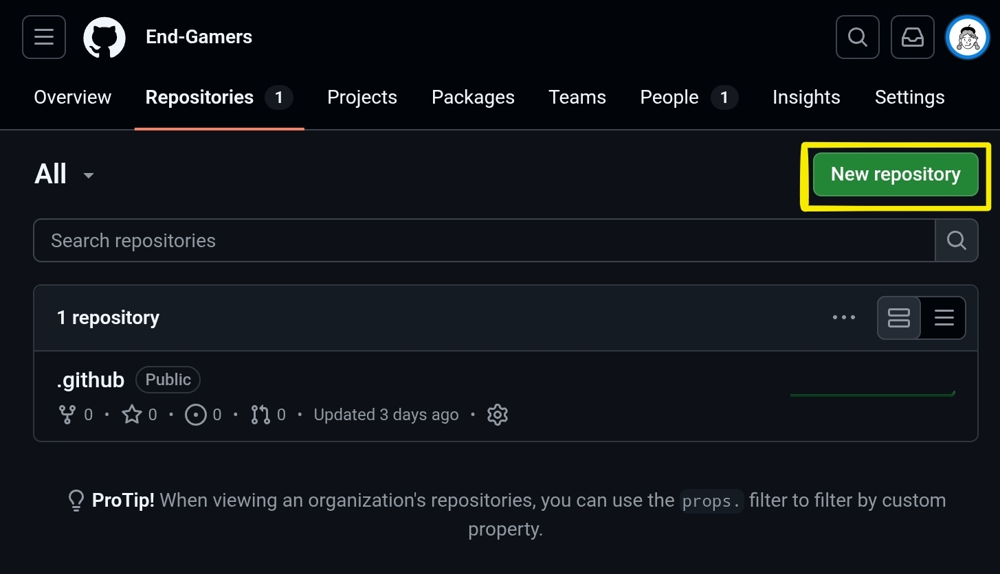
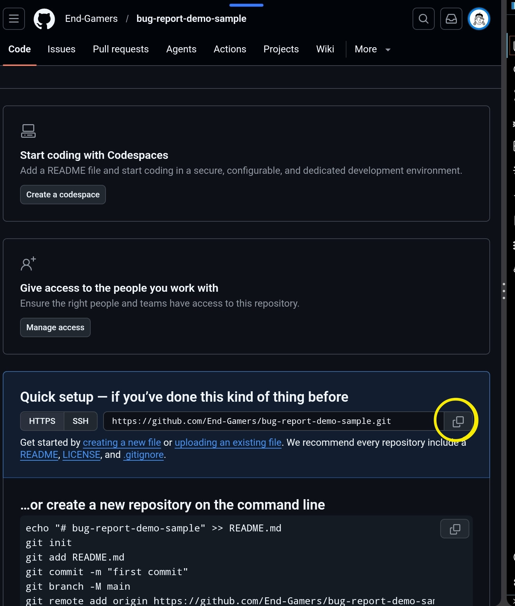
④ .gitignore 파일 만들기
gitignore.io에서 프로젝트에 맞는 .gitignore를 자동 생성합니다. 직접 작성하면 놓치는 항목이 생기므로 이 사이트를 쓰는 것이 훨씬 안전합니다.
.gitignore 파일로 저장| 검색 키워드 | 제외되는 항목 |
|---|---|
| Node | node_modules/, npm-debug.log, .env 등 |
| macOS | .DS_Store, .AppleDouble 등 |
| Windows | Thumbs.db, desktop.ini 등 |
| VisualStudioCode | .vscode/ 설정 파일 (공유 불필요한 것) |
.env(API 키 등 민감 정보)가 커밋되지 않도록 주의하세요.
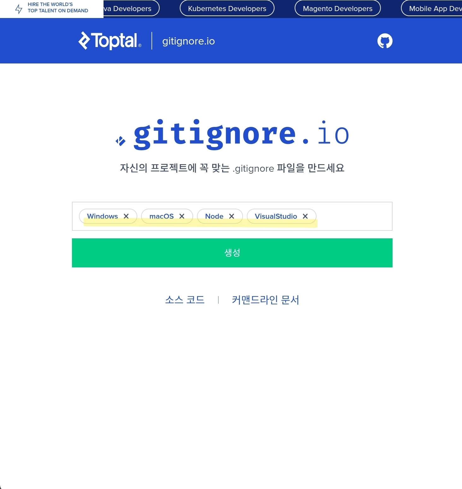
⑤ Claude 익스텐션 설치
VSCode Extensions (Ctrl+Shift+X) → "Claude" 검색 → 발행자가 Anthropic인 것으로 Install.
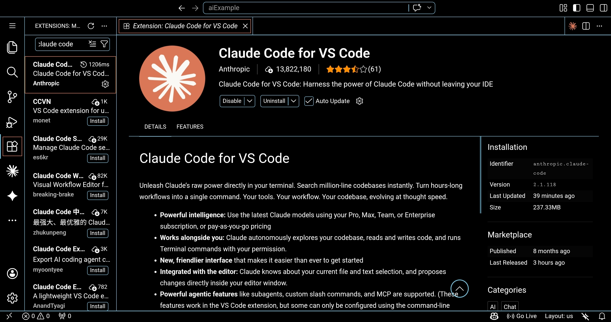
⑥ 레포지토리 clone & 첫 커밋
③에서 만든 GitHub repository를 git clone으로 받으면 폴더 생성·git 초기화·remote 등록이 한 번에 완료됩니다. 이후 ④에서 만든 .gitignore를 폴더에 넣고 첫 커밋을 올립니다.
$ git clone https://github.com/End-Gamers/bug-report-demo-{닉네임}.git
$ cd bug-report-demo-{닉네임}
# ④에서 만든 .gitignore를 이 폴더에 복사한 뒤 첫 커밋
$ echo "# bug-report-demo-{닉네임}" >> README.md
$ git add .gitignore README.md
$ git commit -m "chore: initial commit with gitignore"
$ git push
# VSCode로 폴더 열기
$ code .
repo 권한으로 토큰을 발급하고, push 시 비밀번호 자리에 입력하세요.
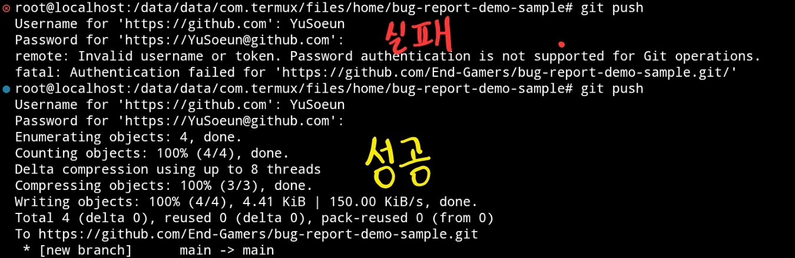
- VSCode 설치 완료
- Git 전역 설정 (이름·이메일) 완료
- End-Gamers org에 repository (bug-report-demo-{닉네임}) 생성 완료
- gitignore.io에서 .gitignore 생성 및 저장
- Claude 익스텐션 설치 및 로그인
- git clone → .gitignore + README 첫 push 완료
앱 기획하기 — 코드 전에 구조부터
AI에게 "버그 리포트 앱 만들어줘"라고 바로 치면 그럴듯한 코드가 나옵니다. 하지만 요구사항이 바뀌거나 기능을 추가할 때마다 처음부터 다시 짜야 합니다. 먼저 입출력과 사용자 플로우를 정의하면 Claude에게 훨씬 정확한 맥락을 줄 수 있습니다.
입력 / 처리 / 출력 정의
사용자 플로우
Claude에게 기획 검토 요청
제니퍼 APM 로그를 붙여넣으면 Claude API로 버그 리포트를 생성하는 순수 클라이언트 사이드 웹앱을 만들려고 해.
기획 내용:
- 입력: 로그 텍스트, Anthropic API 키 (sessionStorage 임시 보관)
- 처리: 로그 전처리 → Claude API 호출 → JSON 응답 파싱
- 출력: 심각도/요약/근본원인/해결책 카드, Markdown 내보내기
이 설계에서 보안, UX, 확장성 측면에서 놓친 게 있는지 검토해줘. 코드는 아직 작성하지 마.
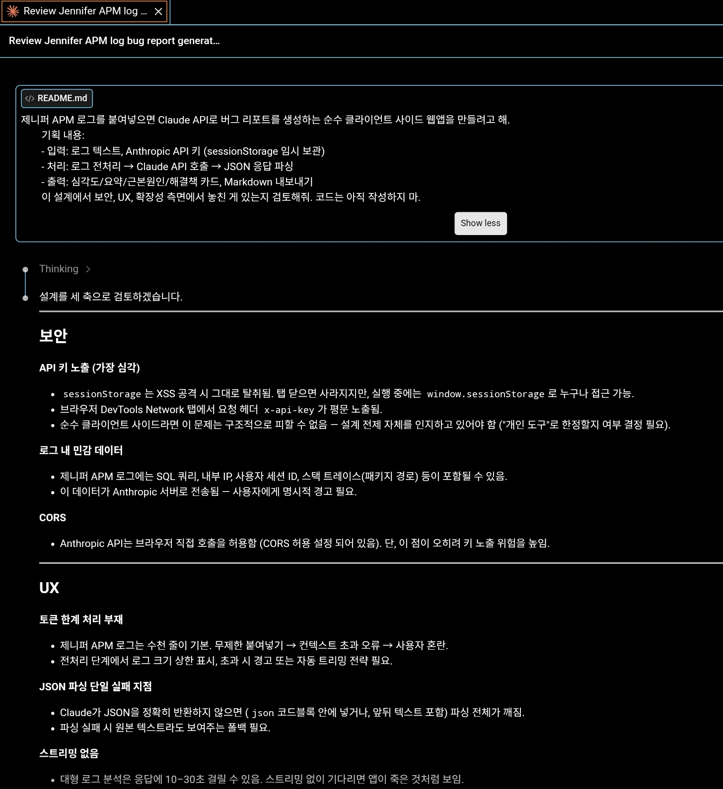
뼈대 잡기 — 구조를 먼저, 내용은 나중에
기획이 정리됐으면 이제 Claude에게 파일 구조와 HTML 마크업 뼈대를 요청합니다. 디자인과 로직은 없어도 됩니다. 이 단계의 목표는 파일 간 관계와 DOM 구조를 확정하는 것입니다.
목표 파일 구조
├── index.html # 진입점, 레이아웃 뼈대
├── style.css # 디자인 (나중에 채움)
├── app.js # 메인 로직 (이벤트, API 호출)
├── lib/
├── parser.js # 로그 파싱 유틸
└── api.js # Claude API 래퍼
└── .gitignore
뼈대 생성 프롬프트
앞서 기획한 버그 리포트 앱의 파일 뼈대를 만들어줘.
요구사항:
- index.html: 시맨틱 HTML만, CSS/JS 로직 없이. 섹션은 (1) 헤더, (2) API 키 입력, (3) 로그 입력 영역, (4) 분석 결과 영역으로 구성
- lib/parser.js: 로그 텍스트에서 ERROR/WARN 라인과 스택트레이스를 분리하는 parseJenniferLog(text) 함수 시그니처와 JSDoc만
- lib/api.js: analyzeLog(parsedLog, apiKey) 함수 시그니처, 반환 타입 정의만
- app.js: 이벤트 리스너 연결 구조만, 실제 구현은 TODO로
실제 구현 코드는 넣지 말고, 구조와 시그니처만 작성해줘.
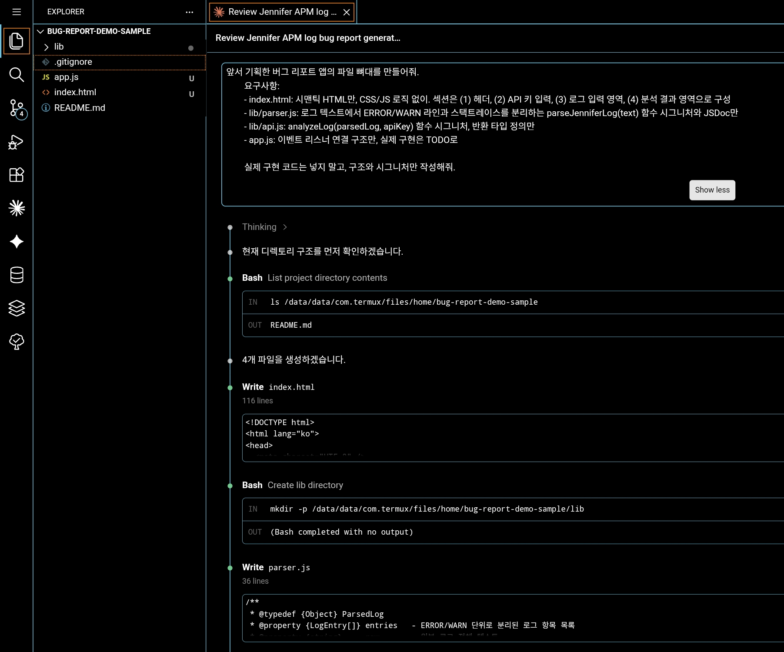
뼈대 커밋
$ git commit -m "chore: project scaffold - file structure and function signatures"
이 커밋은 이후 디자인 실험이나 구현 중 뭔가 꼬였을 때 돌아올 안전한 기준점이 됩니다.
디자인 레퍼런스 실험
이제 핵심 실험입니다. 같은 앱을 레퍼런스 없이 생성한 결과와 레퍼런스를 제공한 결과를 직접 비교해봅니다. 차이를 느끼는 게 목표입니다.
🔬 직접 비교해보기
아래 두 버전은 같은 앱에 대해 레퍼런스 없이 / 있이 생성된 결과입니다. 탭을 눌러 비교해보세요.
Jennifer 로그 분석기
레퍼런스 있이: Datadog, Linear, Vercel Dashboard 스타일을 참조한 결과. 다크 테마, 모노스페이스 타이포, 컴팩트한 정보 밀도가 개발자 도구다운 분위기를 만듭니다.
디자인 레퍼런스 가져오는 방법
Claude에게 디자인 방향을 전달하는 방법은 크게 세 가지입니다. 복잡도와 정확도 순입니다.
① 텍스트로 스타일 지정
가장 쉽지만 가장 불정확. "Datadog 같은 다크 개발자 도구 스타일로"처럼 레퍼런스 제품명을 언급.
② 스크린샷 첨부
Claude는 이미지를 이해합니다. Figma, 실제 앱 스크린샷을 캡처해서 프롬프트에 첨부하면 색상·레이아웃을 직접 반영.
③ CSS 토큰 / 컬러팔레트 전달
디자인 시스템이 있다면 CSS 변수만 전달. Claude가 해당 토큰으로 일관된 컴포넌트 생성.
실습 ① — 레퍼런스 없이 생성
레퍼런스 없이 style.css 생성
VSCode Claude 채팅창에 아래 프롬프트를 입력하세요. 의도적으로 디자인 지시를 최소화합니다.
아까 만든 index.html 뼈대에 적용할 style.css를 작성해줘. 깔끔하게 만들어줘.
생성된 CSS를 style.css에 저장하고 브라우저에서 확인합니다. 스크린샷을 찍어두세요.
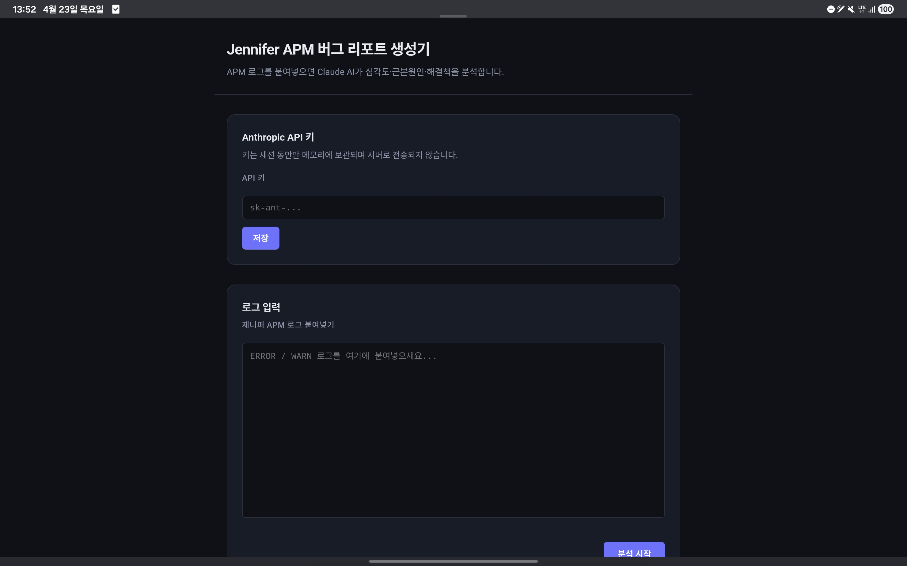
레퍼런스 수집하기
레퍼런스 있이 버전을 만들기 전에, 원하는 스타일의 스크린샷을 수집합니다. 아래 사이트들을 추천합니다:
| 사이트 | 특징 | 어디서 쓸 레퍼런스? |
|---|---|---|
| Dribbble dribbble.com | 디자이너 포트폴리오, 고퀄리티 UI 목업 | "dark dashboard developer tool"로 검색 |
| Behance behance.net | 프로젝트 단위 케이스스터디 | "APM monitoring UI" 검색 |
| 실제 앱 스크린샷 Datadog, Linear, Vercel | 실제 개발자 도구 UI | 직접 캡처 (F12 없이 Print Screen) |
| Figma Community figma.com/community | 편집 가능한 디자인 파일, 무료 공개 | "error dashboard", "log viewer" 검색 |
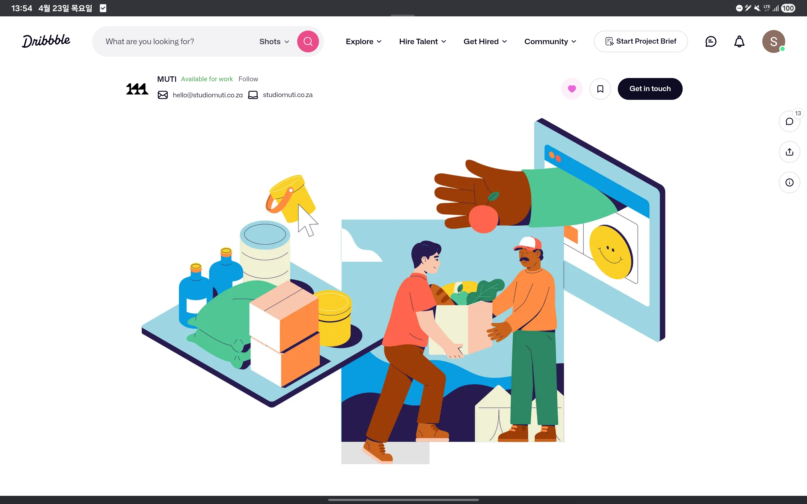
실습 ② — 레퍼런스 있이 생성
스크린샷 첨부 + 상세 지시로 다시 생성
VSCode Claude 채팅창에 스크린샷을 첨부(드래그)하면서 아래 프롬프트를 입력합니다:
[스크린샷 첨부]
첨부한 이미지는 내가 참고하고 싶은 디자인 레퍼런스야. 이 스타일을 바탕으로 index.html의 style.css를 다시 작성해줘.
반영해야 할 요소:
- 전체 배경: 이미지처럼 어두운 다크 테마
- 타이포그래피: 모노스페이스 (JetBrains Mono 또는 Geist Mono)
- 로그 출력 영역: 터미널 느낌, 에러는 빨간색 하이라이트
- 버튼: 최소한의 스타일, 테두리 강조
- 전체적으로 개발자 도구(DevTools) 분위기
이전에 만든 HTML 구조는 그대로 두고, CSS만 교체해줘.
새 CSS를 적용하고 이전 스크린샷과 나란히 비교해보세요. 같은 HTML에서 CSS만 바꿨을 때 얼마나 달라지는지 느껴보는 게 핵심입니다.
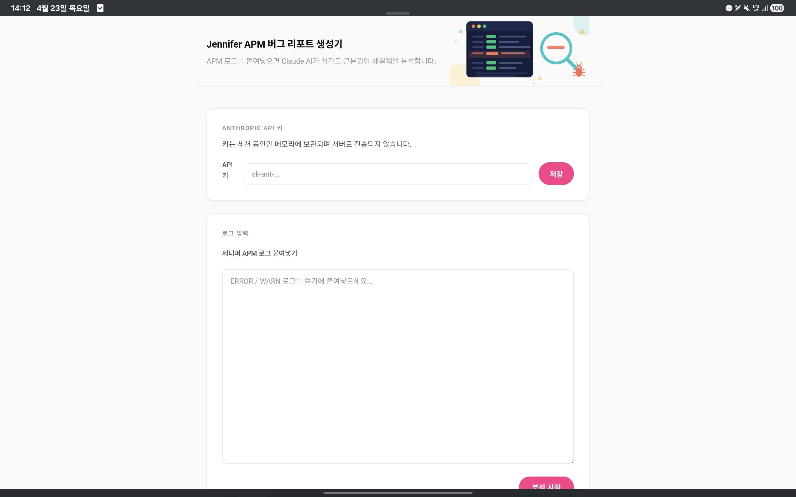
비교 결과 정리
Claude가 "안전한" 선택을 합니다.
- → 밝은 배경, system-ui 폰트
- → 파란 기본 버튼
- → 모든 섹션이 동일한 시각 무게
- → 로그 영역과 결과 영역의 구분이 약함
- → 기능하지만 '개발자 도구'처럼 느껴지지 않음
Claude가 구체적인 의도에 맞춰 선택합니다.
- → 다크 배경, 모노스페이스 일관 적용
- → 에러 라인 빨간 하이라이트 자동 적용
- → 로그 입력부와 결과부 시각적 분리
- → 심각도를 색상 배지로 구분
- → 동료에게 공유하고 싶은 결과물
앱 완성 — 로직 구현
디자인이 확정됐으니 이제 실제 로직을 채웁니다. 뼈대가 있으므로 Claude에게 파일 단위로 구현을 요청할 수 있습니다.
제니퍼 로그 샘플 (테스트용)
실제 제니퍼 APM 로그 접근이 어려우면 아래 샘플을 사용합니다:
java.lang.NullPointerException: Cannot invoke method getEmail() on null object reference
at com.example.UserService.getUserProfile(UserService.java:145)
at com.example.UserController.getUser(UserController.java:78)
at sun.reflect.NativeMethodAccessorImpl.invoke0(Native Method)
[2024-01-15 14:23:46.891] WARN com.example.DBConnectionPool - Connection pool exhausted (pool size: 10/10, waiting: 47)
[2024-01-15 14:23:47.012] ERROR com.example.OrderService - Transaction rollback triggered for order #ORD-2891
com.example.exception.DatabaseException: Connection acquire timeout after 5000ms
at com.example.OrderService.createOrder(OrderService.java:223)
parser.js 구현 요청
lib/parser.js에 parseJenniferLog(text) 함수를 구현해줘.
반환 형식:
{ errors: [{timestamp, level, class, message, stacktrace}], warnings: [...], summary: {errorCount, warnCount} }
제니퍼 APM 로그 형식 예시 [로그 샘플 붙여넣기]. 정규식보다 라인 파싱 방식으로 구현해줘. 테스트 케이스도 같이 작성해줘.
api.js 구현 요청
lib/api.js에 analyzeLog(parsedLog, apiKey) 함수를 구현해줘.
- Groq API 직접 호출 (fetch 사용, 브라우저에서 실행)
- 엔드포인트: https://api.groq.com/openai/v1/chat/completions
- 모델: llama-3.3-70b-versatile
- response_format: { type: 'json_object' }로 JSON 응답 강제
- 응답 스키마: 심각도(Critical/High/Medium/Low), 긴급도, 경영진요약, 비즈니스영향, 근본원인, 영향범위, 단기조치(배열), 장기개선(배열), 재발방지(배열), 예상수정시간
- 에러 처리: API 키 오류(401), 요청 한도 초과(429), 네트워크 오류, 응답 파싱 오류 각각 구분
app.js 이벤트 연결
app.js에 이벤트 핸들러를 구현해줘.
- DOMContentLoaded에서 sessionStorage API 키 불러오기
- 분석 버튼 클릭 → 로딩 상태 표시 → parseJenniferLog → analyzeLog → 결과 렌더링
- 결과 렌더링 함수: 심각도에 따라 배지 색상 분기, Markdown 복사 버튼 포함
- 드래그 앤 드롭으로 .log 파일 열기
- 에러 상태를 사용자 친화적 메시지로 표시
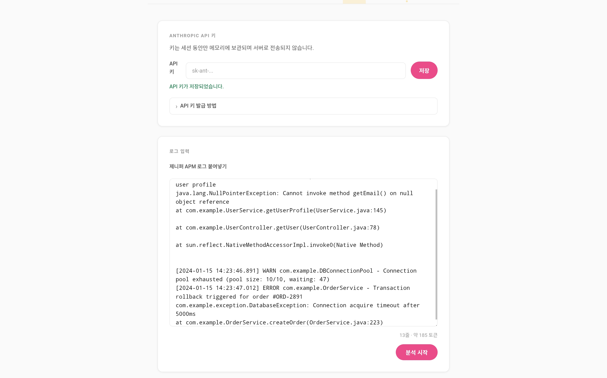
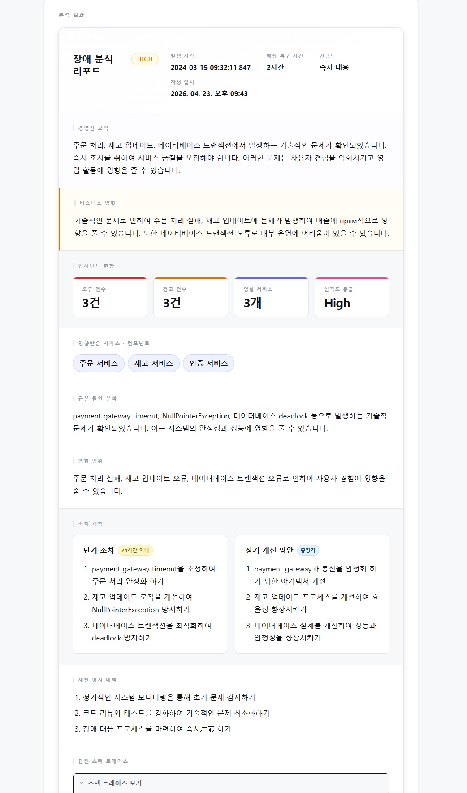
최종 커밋
$ git commit -m "feat: jennifer log analyzer - full implementation"
# 태그를 달아두면 나중에 찾기 쉽습니다
$ git tag v1.0.0
다음 단계 아이디어
🔄 스트리밍 응답
Groq API의 stream: true 옵션으로 응답을 실시간 타이핑 효과로 표시. Claude에게 "fetch streaming 구현해줘"로 확장 가능.
📊 GitHub Actions 연동
CI 파이프라인 에러 로그를 자동으로 이 앱에 넣어서 슬랙 알림으로 버그 리포트 전송. Claude에게 워크플로우 YAML 작성 요청.
🧩 VSCode Extension 화
이 앱의 로직을 VSCode 익스텐션으로 만들면, 에디터에서 로그 파일을 우클릭 → "Analyze with Claude"로 바로 실행 가능.
🗄️ 히스토리 저장
IndexedDB에 분석 이력 저장, 날짜별 조회, 동일 에러 패턴 카운팅. Claude에게 "IndexedDB 래퍼 작성해줘"로 확장.